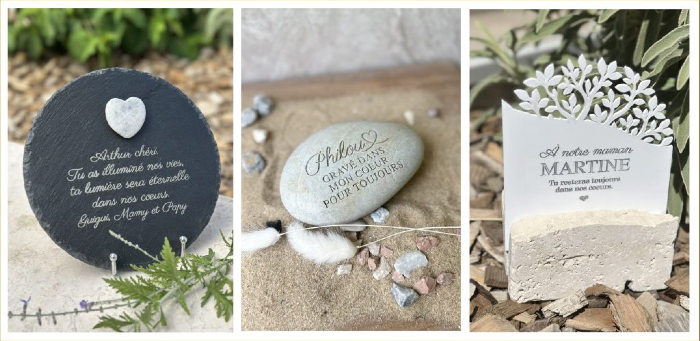

Oui. Un hommage funéraire peut être sobre, contemporain et profondément émouvant, sans reprendre les codes traditionnels.
Aujourd’hui, certaines familles recherchent des créations plus discrètes, avec des matières naturelles, des formes épurées et une personnalisation qui raconte vraiment la personne disparue.
La pierre, une matière intemporelle
Un galet funéraire personnalisé apporte une touche naturelle et élégante. Sa forme unique, sa texture et sa simplicité en font un hommage différent, qui peut trouver sa place sur une tombe ou dans un espace de recueillement.
Quelques mots peuvent suffire : un prénom, une date, une phrase ou un symbole.
L’essentiel : un hommage qui ressemble à la personne
Un hommage n’a pas besoin d’être grand pour avoir du sens.
Une belle pierre. Quelques mots. Un souvenir.
Chez L’Atelier Inspire, nous imaginons des créations funéraires personnalisées, modernes et naturelles, pour garder près de soi une trace de ceux qui nous manquent.